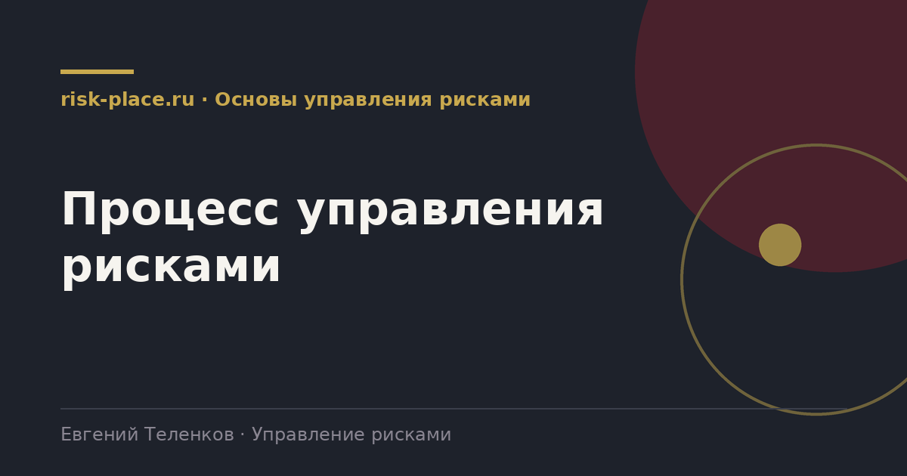

risk-
risk-Область применения и критерии
- Определено, какие подразделения и процессы охвачены, какие шкалы используются и что считается приемлемым уровнем
Главная · Библиотека · Основы управления рисками · Процесс управления рисками
Библиотека · Основы управления рисками
Процесс выглядит одинаково почти в любой методологии. Разница между работающей системой и мертвой в том, доводится ли он до последнего шага.

На выходе каждого шага должен появляться артефакт, иначе шаг считается невыполненным.
Первый разрыв между идентификацией и анализом. Риски собрали на сессии, а оценивать их отдали риск-менеджеру, который делает это в одиночку. Владельцы с чужой оценкой не согласны и не считают ее своей.
Второй разрыв между оценкой и обработкой. Карта построена, зоны раскрашены, но решения о том, что делать с красной зоной, никто не принял, потому что для этого нужен уровень полномочий выше риск-функции.
Третий и главный разрыв между обработкой и мониторингом. Меры записали, сроки поставили, а через квартал никто не проверил. Именно здесь система теряет весь накопленный смысл, потому что ценность появляется не в момент записи меры, а в момент ее подтвержденного выполнения.
Четыре условия, проверенные практикой. Ни одно из них не про документы.
Для компании среднего размера полный первый цикл занимает от шести до десяти недель. Определение области и критериев неделя, идентификация две-три недели вместе с интервью и сессиями, анализ и оценка две недели, подготовка планов реагирования две недели, вынесение на комитет одна неделя.
Попытка сделать это за две недели обычно заканчивается формальным реестром, который потом никто не открывает. Попытка растянуть на полгода заканчивается тем, что к моменту готовности половина рисков перестает быть актуальной.
Частые вопросы
Одна форма для любого вопроса
Расскажем о ближайших датах, предложим формат под ваш состав участников и назовем порядок бюджета.
Предпочитаете почту — напишите на info@risk-place.ru. Адрес: Москва, улица Скаковая, 32с2.